arXiv 2306.03310 · cs.AI · v2 2023 年 10 月 14 日 · NeurIPS 2023 数据集与基准 · 中文精读
LIBERO: Benchmarking Knowledge Transfer for Lifelong Robot Learning
作者 Bo Liu、Yifeng Zhu、Chongkai Gao（三人同等贡献）、Yihao Feng、Qiang Liu、Yuke Zhu、Peter Stone，来自 UT Austin、Sony AI 和清华大学。
关于这份精读。这篇论文在 arXiv 上以 CC BY 4.0 发布（署名即可使用）。我对照了 PDF：页脚只有页码和 NeurIPS 2023 数据集与基准赛道的说明，没有与之矛盾的版权声明。这里读的是 v2（2023-10-14）。按原文顺序覆盖正文 7 节、清单之后的附录 A 到 E，小节编号和原文一致，用自己的话整理，不逐字翻译。公式按原文编号，表格数字照录原文。
图 1 到 11、图 13、图 21 从 arXiv PDF 裁切，只做了裁切、缩放和格式转换，没有改内容，版权归作者，按 CC BY 4.0 使用；每张图注都有“看原图”链接。其余图（12、14 到 20、22 到 26）用文字描述。图下的文字是我写的。本页的“读者注”是整理时核算或对照发现的，不属于论文内容，页尾有汇总。
代码。官方代码是 Lifelong-Robot-Learning/LIBERO，代码 MIT 许可，数据集 CC BY 4.0。我读的是提交 8f1084e（2025-03-15，也是 OpenWAM 固定的版本），只读，没有运行，没有加载里面的 .init/.pruned_init 文件（只用 pickletools 静态读了数组形状）。代码和论文不一致的地方两边都写；集中的对照在 代码对照 一节。
终身学习（lifelong learning）指一个智能体一个接一个地学新任务，学新的时候用上旧知识，还不要把旧的忘掉。图像和文本领域的终身学习主要迁移的是陈述性知识（这是什么东西、在哪里）；机器人决策还要迁移程序性知识（怎么做一个动作）。作者把这类问题叫 LLDM（lifelong learning in decision making），并为它做了一个机器人操作基准 LIBERO（论文）。
论文报告的四个发现：架构和算法一样重要（时间维度上 transformer 好于 RNN，ViT 适合物体多样的任务）；被测的终身学习算法都能减少遗忘，但前向迁移都不如什么也不做的顺序微调；用任务描述的语言嵌入和只用“Task 5”这种编号的嵌入差不多；在 LIBERO-90 上做普通的监督预训练反而让后续终身学习变差。
读完我认为最值得记住的三点：
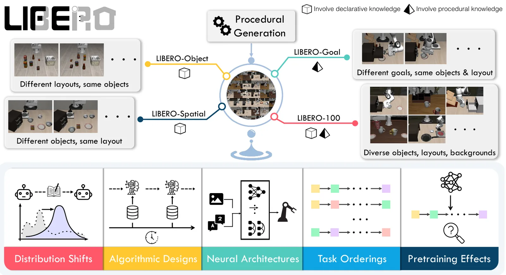
图里连到 LIBERO-Object 的框写着 “Different layouts, same objects”，连到 LIBERO-Spatial 的框写着 “Different objects, same layout”。但图注、§4.2 和代码都说 Spatial 是“同一组物体、不同位置”，Object 是“每个任务一个不同的物体”。框里的截图本身是对的：Object 框里是一排杂货和篮子，Spatial 框里是黑碗和盘子。所以只是两行小字放反了。
用户在复现 OpenWAM 和 MolmoAct2 在 LIBERO 上的分数。那两页用的是 LIBERO 的环境和四个套件，但训练数据、训练方式和评测协议都已经和这篇原论文不同。这一页把原论文的设定从头读一遍，再在 LIBERO 在 VLA 论文里怎么用 一节说清差别。环境、套件和三家评测协议的对照已经写在 OpenWAM 页读者问答 问 1，这里不重抄，只补充原论文和代码里新核到的细节。
问题。多任务学习能得到通用智能体，但计算量大，也不能随环境变化不断更新。终身学习把学习分摊到智能体的一生：用旧知识帮新任务（前向迁移），用新知识改善旧任务（后向迁移）。已有的终身学习研究大多在视觉或语言任务上，迁移的是关于实体和概念的陈述性知识。决策任务同时需要陈述性和程序性知识。作者举的例子：机器人先学会从冰箱取果汁，学了别的任务后再做就失败了，原因可能是忘了果汁或冰箱在哪（陈述性），也可能是忘了怎么开冰箱门（程序性）。现在缺少系统、定量地分析这种迁移的手段。
做法。LIBERO 是 LIfelong learning BEnchmark on RObot manipulation tasks 的缩写。理想的 LLDM 测试平台应该能在一个不断扩大、共享概念和动作的任务集上持续学习。LIBERO 用程序化生成流水线造任务，任务受人类活动启发；为了基准测试，生成了 130 个语言条件的操作任务，分成四个套件，并给所有任务提供高质量的人工遥操作演示。
研究的五个主题（图 1 下排）：不同分布偏移下的知识迁移；网络架构设计；终身学习算法设计；对任务顺序的鲁棒性；预训练模型在 LLDM 里的作用。
四个发现（原文列表，用我的话说）：
有限时域 MDP \(\mathcal M=(\mathcal S,\mathcal A,\mathcal T,H,\mu_0,R)\)：状态和动作空间、转移 \(\mathcal T:\mathcal S\times\mathcal A\to\mathcal S\)、时域 \(H\)、初始状态分布 \(\mu_0\)、奖励 \(R\)。论文假定稀疏奖励，用目标谓词 \(g:\mathcal S\to\{0,1\}\) 代替 \(R\)，目标是 \(\max_\pi J(\pi)=\mathbb E_{s_t,a_t\sim\pi,\mu_0}\big[\sum_{t=1}^H g(s_t)\big]\)。
机器人用同一个策略 \(\pi\) 依次学 \(K\) 个任务 \(\{T^1,\dots,T^K\}\)，策略以任务为条件：\(\pi(\cdot\mid s;T)\)。每个任务 \(T^k\equiv(\mu_0^k,g^k)\) 由初始状态分布和目标谓词定义，\(\mathcal S,\mathcal A,\mathcal T,H\) 对所有任务相同（上标表示任务，下标表示时间步）。学到第 \(k\) 个任务时的目标：
关键约束：学 \(T^k\) 时，前 \(k-1\) 个任务已经不能再访问。
式 (1) 里内层求和的上限是 \(L\)，但 \(L\) 在前后文都没有定义；§2.1 的同一个和用的是 \(H\)。我认为应是 \(H\)。上式照录原文。另外，目标是“谓词为真的步数之和”，而代码里一旦所有谓词为真就判成功、结束这一回合（bddl_base_domain.py:807），实际报的是 0/1 成功率。两者只差在成功后还会不会继续计数，论文里所有数字都是成功率。
终身模仿学习。稀疏奖励的强化学习太难，所以论文改成每个任务给一个小演示集 \(D^k=\{\tau^k_i\}_{i=1}^N\)，\(\tau^k_i=(o_0,a_0,o_1,a_1,\dots,o_{l^k})\)，\(l^k\le H\)。\(o_t\) 包括图像和机器人关节、夹爪信息。观测通常不是马尔可夫的，所以按部分可观测 MDP 的做法，用历史 \(s_t\equiv o_{\le t}\triangleq(o_0,\dots,o_t)\) 当状态。训练用行为克隆，替代目标为：
\(\mathcal L\) 是监督损失，例如负对数似然；\(\pi\) 是高斯混合模型。同样假定学 \(T^k\) 时 \(\{D^p:p<k\}\) 不能完整访问（ER 可以留一部分）。
代码里“历史”只取最近 10 步：数据集按长度 10 的片段采样（configs/data/default.yaml 的 seq_len: 10），推理时 transformer 策略维护一个最多 10 步的队列；RNN 策略则在评测时把隐状态一直带到回合结束（读者注 21）。
这一节说明 LIBERO 为什么这样设计，每个主题对应后面的一组实验。
四个组成部分：程序化生成流水线（§4.1）、四个基准套件（§4.2）、五种算法（§4.3）、三种网络（§4.4）。
结论先说：任务分三步造出来：①从人类活动的语言标注提炼行为模板，套上仿真器里有的物体生成指令；②按指令选场景，写出初始状态分布 \(\mu_0\)；③写出和指令一致的目标谓词合取式 \(g\)。底层是 robosuite（论文）。
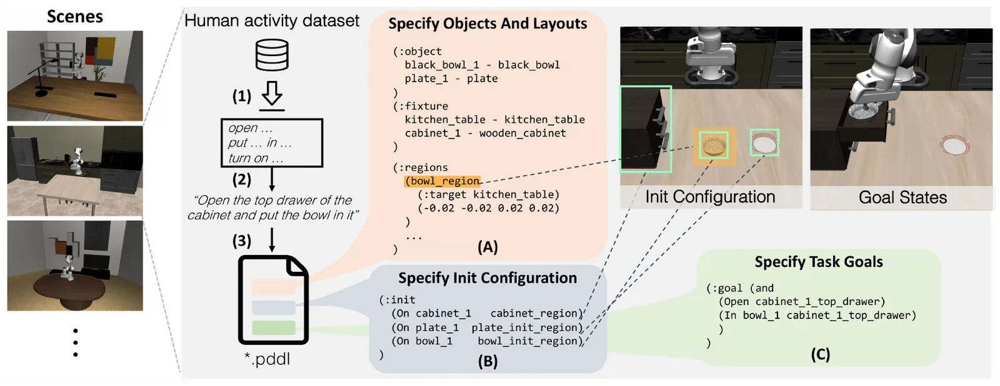
行为模板和指令。人类活动是任务的丰富来源。作者选了带语言标注的大规模第一视角活动数据集 Ego4D（论文），抽出语言描述，归纳成一大组常用模板，再用仿真器里的物体填空。例如模板 “Open …” 生成 “Open the drawer of the cabinet”。
初始状态分布 \(\mu_0\)。先采样一个和指令里物体、行为匹配的场景布局，例如“打开柜子顶层抽屉并把碗放进去”选厨房场景。再用 PDDL 语言写出 \(\mu_0\)：物体类别和摆放区域（图 2-A），初始状态（图 2-B）。
目标 \(g\)。用谓词的合取式表示。一元谓词描述物体属性，如 Open(X)、TurnOff(X)；二元谓词描述物体间空间关系，如 On(A, B)、In(A, B)。所有谓词都为真时仿真结束。
benchmark/mu_creation.py 里 20 个场景模板（@register_mu，厨房 10 个、客厅 6 个、书房 4 个，正好对应附录 E.3 里 KITCHEN_SCENE1–10、LIVING_ROOM_SCENE1–6、STUDY_SCENE1–4），以及 utils/task_generation_utils.py、bddl_generation_utils.py 把场景和目标写成文件。.bddl 文件（bddl_files/ 下 10 + 10 + 10 + 90 + 10），依赖 bddl==1.0.1。语法和附录 C.2 的示例相同。problems/libero_tabletop_manipulation.py:135）：对 (:goal (And …)) 里每个谓词求值，全部为真才返回 True；step() 把这个值当 done 返回（bddl_base_domain.py:807）。没有部分得分。predicates/base_predicates.py、object_states/base_object_states.py）：物体对物体的 On(A, B) 要求 B 的位置不高于 A、两者接触、水平距离小于 3 cm（第 87–93 行）；物体对区域（如 flat_stove_1_cook_region）的 On 要求 A 落在区域的盒子里并和区域所属物体接触；In 要求接触且在容器盒内；Open/Close/TurnOn/TurnOff 看关节角是否越过物体属性里的开合范围。结论先说：流水线能造无限多任务，但基准要固定。四个套件里前三个把陈述性和程序性知识拆开考，LIBERO-100 考混在一起的知识。
130 = 10 + 10 + 10 + 100。每个任务 50 条演示，一共 6,500 条。各套件的任务名见附录 C 和 OpenWAM 页的套件表；代码里 LIBERO-Long 叫 libero_10。
实现了三种代表性算法，分别属于三大类：基于记忆的经验回放 ER、基于正则化的 EWC、基于动态结构的 PackNet。作者引用 Continual World 的结论说这三种是当时最好的。另外实现两条基线：顺序微调 SeqL（下界）和多任务学习 MTL（上界）。细节在附录 B.1，代码差异见 读者注 15 到 17。
结论先说：三种视觉-语言策略网络的差别在于空间信息（每帧图像）和时间信息（帧序列）怎样聚合、语言从哪里进来。三者都用预训练 BERT 编码指令，输出头都是高斯混合（GMM），用行为克隆训练。
所有时间骨干每个决策步输出一个隐向量，接 GMM 输出头得到动作的多峰分布；执行时从分布里采样连续的末端动作。三种架构的图在附录 A（图 6、7）。
演示数据。为了能用有限算力研究终身学习算法，全部用行为克隆，每个任务提供 50 条高质量演示，由人类专家用 3Dconnexion SpaceMouse 遥操作采集。
modules/rgb_modules.py）：torchvision ResNet-18 去掉最后 4 个子模块（remove_layer_num: 4，即去掉 layer3、layer4、池化和全连接），只留 stem + layer1 + layer2 共 4 个残差块，不加载 ImageNet 权重（pretrained: false）。每个残差块后面一个 FiLM 层 \((1+\gamma)\odot h+\beta\)，\(\gamma,\beta\) 由 768 维 BERT 嵌入线性投影得到（第 201 行起）。128 × 128 输入到 layer2 输出是 16 × 16 × 128，接 32 个关键点的空间 softmax 和线性层，得到每帧每路相机一个 64 维向量。BCTransformerPolicy 两样都做：图像编码器收到 langs=data["task_emb"]（bc_transformer_policy.py:274，配置 language_fusion: 'film'），同时语言 MLP 输出也作为 token。每一步 5 个 64 维 token：语言、关节、夹爪、第三人称图像、腕部图像；10 步一共 50 个 token；取每步的语言 token 位置作为输出。bc_vilt_policy.py）：每路相机先过 7 × 7、步长 2 的卷积，再切 8 × 8 的 patch，128 × 128 图像得到 8 × 8 = 64 个 patch；两路相机 128 个 patch token，加一个语言 token 和一个汇总 token，共 130 个 128 维 token，过 7 层空间 transformer。汇总 token 降到 64 维，和语言、关节、夹爪组成每步 4 个 token，10 步 40 个，过 4 层时间 transformer。图 6 把这个模型叫 “BC-Transformer2”，代码类名是 BCViLTPolicy。policy_head.py）：5 个分量，隐藏层 1024，均值过 tanh 限制在 [−1, 1]，标准差用 softplus 加 1e-4。use_augmentation: true）。自己画的 · 11 幕 3D 框架动画
整个框架拆成 11 幕：总览、行为模板到指令、场景和 BDDL 到初始状态、四个套件、遥操作采演示、观测和动作接口、三种策略网络、终身学习流程和四种算法、FWT/NBT/AUC 当场计算、结果、VLA 时代的用法。可以暂停、拖进度、旋转画面、切换开关。下面嵌的是第 9 幕（指标计算）。
实验是针对 §3 五个主题的初步研究，设置细节在附录 D。六个研究问题：Q1 不同架构和算法在特定分布偏移下表现如何；Q2 架构对知识迁移影响多大，各架构有没有专长；Q3 终身监督学习的算法在 LLDM 上表现如何；Q4 语言嵌入影响多大；Q5 算法对任务顺序是否鲁棒；Q6 监督预训练能否改善下游终身学习。
结论先说：三个指标都按成功率算，不按训练损失（附录 E.2 说明损失会误导）。FWT 越高学得越快，NBT 越低旧任务保持得越好，AUC 越高整体越好。
记 \(c_{i,j,e}\) 为智能体已经学完前 \(i-1\) 个任务、在第 \(i\) 个任务上刚训练了 \(e\) 个 epoch（\(e\in\{0,5,\dots,50\}\)）时，在任务 \(j\) 上的成功率。令 \(c_{i,i}=\max_e c_{i,i,e}\) 为当前任务所有评估点里的最好成功率；\(e^*_i\) 为最早达到它的 epoch，并假定之后所有 \(e\ge e^*_i\) 都有 \(c_{i,i,e}=c_{i,i}\)（脚注：实际性能不一定单调，但保留评估过的最好检查点，当作智能体在 \(e^*_i\) 停止学习）。对 \(j\ne i\)，定义 \(c_{i,j}=c_{i,j,e^*_i}\)。三个指标：
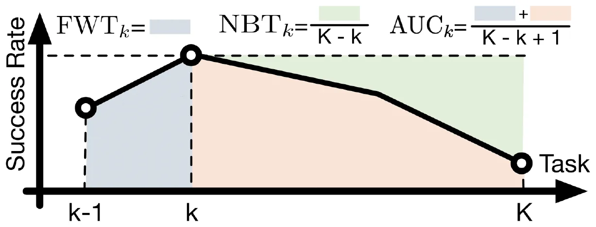
FWT\(_k\) 的 11 个点包括 \(e=0\)，即还没开始学任务 \(k\) 时、只靠前面任务学到的东西的零样本成功率。
FWT：algos/base.py 第 162 行循环 \(e=0,\dots,50\)，每 5 个 epoch 评估一次（\(e=0\) 时只算损失不更新），一共 11 个点；第 211 行用严格的 < 更新最好成绩，所以 \(e^*\) 取最早的那个；第 253 行把 \(e^*\) 之后的值都替换成最好值；第 254 行除以 11。和式 (3) 完全一致。
AUC：主训练脚本不算 NBT 和 AUC，只存成功率矩阵 S_conf_mat（main.py:239）和每个任务的 11 点曲线。算这两个指标的代码在 notebooks/quick_guide_algo.ipynb 的 compute_metric：0 起编号时 auc_k = (auc_k + fwts[k].mean()) / (num_tasks - k)，换成 1 起编号正是 \(1/(K-k+1)\)，一致。
if k + 1 < num_tasks: bwt_k /= …，即令 NBT\(_K=0\)，再把 \(K\) 项求和除以 \(K\)。所以代码的 NBT 等于“前 9 个任务的平均遗忘”乘 \(9/10\)。表里的 NBT 若用这份代码算，比按 \(K-1\) 平均小 10%。论文没说用的是哪种。mat[k,k]，即学完任务 \(k\) 后把最好检查点重新评估一次的结果（main.py:228-239 对所有已学任务重测 20 次）。每次评估只有 20 个回合，成功率的标准误在 \(p=0.5\) 时是 \(\sqrt{0.5\times0.5/20}=0.112\)，11 次里取最大会偏高，重新评估则没有这个偏差。按论文公式算的 NBT 会系统地偏大一些。偏多少要看每条学习曲线，我没法从论文数字算出来。另外，这个 notebook 的输出单元格把这个量叫 bwt，示例输出是 {'fwt': 0.603, 'bwt': 0.541, 'auc': 0.266}（一个种子的自定义算法示例），不是论文表里的数。
全部组合的完整结果在附录 E.1（表 8）。下面三张表都是表 8 的子集，我逐格对过，表 1 的 72 格和表 2 的 52 格（每格含均值和标准误）全部和表 8 一致，表 3 的 BERT 行也等于表 8 里 ER + ResNet-T 在 LIBERO-Long 上的那一行。
表 1 固定算法为 ER 和 PackNet（论文说这两种在所有套件上终身学习表现最好），比较三种架构。
| 架构 | ER | PackNet | ||||
|---|---|---|---|---|---|---|
| FWT ↑ | NBT ↓ | AUC ↑ | FWT ↑ | NBT ↓ | AUC ↑ | |
| LIBERO-Long | ||||||
| ResNet-RNN | 0.16 ± 0.02 | 0.16 ± 0.02 | 0.08 ± 0.01 | 0.13 ± 0.00 | 0.21 ± 0.01 | 0.03 ± 0.00 |
| ResNet-T | 0.48 ± 0.02 | 0.32 ± 0.04 | 0.32 ± 0.01 | 0.22 ± 0.01 | 0.08 ± 0.01 | 0.25 ± 0.00 |
| ViT-T | 0.38 ± 0.05 | 0.29 ± 0.06 | 0.25 ± 0.02 | 0.36 ± 0.01 | 0.14 ± 0.01 | 0.34 ± 0.01 |
| LIBERO-Spatial | ||||||
| ResNet-RNN | 0.40 ± 0.02 | 0.29 ± 0.02 | 0.29 ± 0.01 | 0.27 ± 0.03 | 0.38 ± 0.03 | 0.06 ± 0.01 |
| ResNet-T | 0.65 ± 0.03 | 0.27 ± 0.03 | 0.56 ± 0.01 | 0.55 ± 0.01 | 0.07 ± 0.02 | 0.63 ± 0.00 |
| ViT-T | 0.63 ± 0.01 | 0.29 ± 0.02 | 0.50 ± 0.02 | 0.57 ± 0.04 | 0.15 ± 0.00 | 0.59 ± 0.03 |
| LIBERO-Object | ||||||
| ResNet-RNN | 0.30 ± 0.01 | 0.27 ± 0.05 | 0.17 ± 0.05 | 0.29 ± 0.02 | 0.35 ± 0.02 | 0.13 ± 0.01 |
| ResNet-T | 0.67 ± 0.07 | 0.43 ± 0.04 | 0.44 ± 0.06 | 0.60 ± 0.07 | 0.17 ± 0.05 | 0.60 ± 0.05 |
| ViT-T | 0.70 ± 0.02 | 0.28 ± 0.01 | 0.57 ± 0.01 | 0.58 ± 0.03 | 0.18 ± 0.02 | 0.56 ± 0.04 |
| LIBERO-Goal | ||||||
| ResNet-RNN | 0.41 ± 0.00 | 0.35 ± 0.01 | 0.26 ± 0.01 | 0.32 ± 0.03 | 0.37 ± 0.04 | 0.11 ± 0.01 |
| ResNet-T | 0.64 ± 0.01 | 0.34 ± 0.02 | 0.49 ± 0.02 | 0.63 ± 0.02 | 0.06 ± 0.01 | 0.75 ± 0.01 |
| ViT-T | 0.57 ± 0.00 | 0.40 ± 0.02 | 0.38 ± 0.01 | 0.69 ± 0.02 | 0.08 ± 0.01 | 0.76 ± 0.02 |
表 1（原文第 7 页）：三种架构在四个套件上用 ER 和 PackNet 的结果。3 个种子的均值 ± 标准误。原文把最好的加粗，若在双尾、等样本量、不等方差的 t 检验（p = 0.05）下显著优于其他架构则标紫色；这里没有复现加粗和颜色，显著性我自己算了一遍（读者注 7）。
论文的发现：① ResNet-T 和 ViT-T 平均远好于 ResNet-RNN，说明时间维度上 transformer 可能比 RNN 好。② 架构之间的差别依赖算法。用 PackNet 时 ResNet-T 和 ViT-T 没有显著差别，只有 LIBERO-Long 上 ViT-T 好得多；用 ER 时 ResNet-T 除了 LIBERO-Object 都好于 ViT-T。这可能说明网络容量足够大时，ViT 更擅长处理物体种类多的视觉信息（佐证是表 8 里 LIBERO-Object 的 MTL：ViT-T 0.78 对 ResNet-T 0.54）。
论文用的是 Welch t 检验（不等方差）。我用表里的均值和标准误还原：\(t=(m_1-m_2)/\sqrt{\mathrm{SE}_1^2+\mathrm{SE}_2^2}\)，自由度按 Welch–Satterthwaite 公式，每组 \(n=3\)。只比每列第一和第二：
限制：标准误只给到两位小数，0.00 的格子实际可能是 0.001 到 0.005，会让 t 值偏大或无法计算；这里的 p 只是近似。
表 2 固定架构为 ResNet-T（论文说它在所有架构里最好），比较三种终身学习算法和 SeqL、MTL 两条基线。
| 算法 | 左栏套件 | 右栏套件 | ||||
|---|---|---|---|---|---|---|
| FWT ↑ | NBT ↓ | AUC ↑ | FWT ↑ | NBT ↓ | AUC ↑ | |
| LIBERO-Long | LIBERO-Spatial | |||||
| SeqL | 0.54 ± 0.01 | 0.63 ± 0.01 | 0.15 ± 0.00 | 0.72 ± 0.01 | 0.81 ± 0.01 | 0.20 ± 0.01 |
| ER | 0.48 ± 0.02 | 0.32 ± 0.04 | 0.32 ± 0.01 | 0.65 ± 0.03 | 0.27 ± 0.03 | 0.56 ± 0.01 |
| EWC | 0.13 ± 0.02 | 0.22 ± 0.03 | 0.02 ± 0.00 | 0.23 ± 0.01 | 0.33 ± 0.01 | 0.06 ± 0.01 |
| PackNet | 0.22 ± 0.01 | 0.08 ± 0.01 | 0.25 ± 0.00 | 0.55 ± 0.01 | 0.07 ± 0.02 | 0.63 ± 0.00 |
| MTL | 0.48 ± 0.01 | 0.83 ± 0.00 | ||||
| LIBERO-Object | LIBERO-Goal | |||||
| SeqL | 0.78 ± 0.04 | 0.76 ± 0.04 | 0.26 ± 0.02 | 0.77 ± 0.01 | 0.82 ± 0.01 | 0.22 ± 0.00 |
| ER | 0.67 ± 0.07 | 0.43 ± 0.04 | 0.44 ± 0.06 | 0.64 ± 0.01 | 0.34 ± 0.02 | 0.49 ± 0.02 |
| EWC | 0.56 ± 0.03 | 0.69 ± 0.02 | 0.16 ± 0.02 | 0.32 ± 0.02 | 0.48 ± 0.03 | 0.06 ± 0.00 |
| PackNet | 0.60 ± 0.07 | 0.17 ± 0.05 | 0.60 ± 0.05 | 0.63 ± 0.02 | 0.06 ± 0.01 | 0.75 ± 0.01 |
| MTL | 0.54 ± 0.02 | 0.80 ± 0.01 | ||||
表 2（原文第 8 页）：固定 ResNet-T，三种终身学习算法和 SeqL、MTL 基线在四个套件上的结果。上半是 LIBERO-Long（左）和 LIBERO-Spatial（右），下半是 LIBERO-Object（左）和 LIBERO-Goal（右）。MTL 只有一个数，放在 AUC 列。3 个种子的均值 ± 标准误，检验方法同表 1。
论文的发现：① SeqL 在所有套件上 FWT 最好，令人意外：说明所有被测的终身学习算法其实都损害了前向迁移。② PackNet 在 LIBERO-X 上好于其他算法，但在 LIBERO-Long 上明显不如 ER，主要因为前向迁移低。这印证动态结构方法擅长防遗忘；但 PackNet 把网络分成子网络，学每个任务能用的容量变小，作者猜它不够学 LIBERO-Long。③ EWC 比 SeqL 还差，说明损失上的正则化反而会妨碍 LLDM（附录 E.2）。④ 回放方法 ER 在所有套件上都稳健。
论文没有给跨套件的平均。按表 8 直接平均四个套件（每个套件权重相同）：
| 算法 | 架构 | FWT | NBT | AUC |
|---|---|---|---|---|
| SeqL | ResNet-RNN | 0.458 | 0.537 | 0.130 |
| SeqL | ResNet-T | 0.703 | 0.755 | 0.208 |
| SeqL | ViT-T | 0.645 | 0.710 | 0.190 |
| ER | ResNet-RNN | 0.318 | 0.268 | 0.200 |
| ER | ResNet-T | 0.610 | 0.340 | 0.453 |
| ER | ViT-T | 0.570 | 0.315 | 0.425 |
| EWC | ResNet-RNN | 0.123 | 0.180 | 0.037 |
| EWC | ResNet-T | 0.310 | 0.430 | 0.075 |
| EWC | ViT-T | 0.315 | 0.415 | 0.092 |
| PackNet | ResNet-RNN | 0.253 | 0.328 | 0.083 |
| PackNet | ResNet-T | 0.500 | 0.095 | 0.557 |
| PackNet | ViT-T | 0.550 | 0.138 | 0.562 |
| MTL | ResNet-RNN | 0.375 | ||
| MTL | ResNet-T | 0.662 | ||
| MTL | ViT-T | 0.713 |
按 AUC 排序：PackNet + ViT-T 0.562 ≈ PackNet + ResNet-T 0.557 > ER + ResNet-T 0.453 > ER + ViT-T 0.425；SeqL 和 EWC 都在 0.21 以下。三个 MTL 平均是 0.375、0.662、0.713，ViT-T 最高。
同一个终身学习器（ResNet-T + ER，LIBERO-Long）换四种预训练语言嵌入：BERT、CLIP、GPT-2，以及 Task-ID 嵌入。Task-ID 嵌入是把 “Task 5” 这样的字符串送进预训练 BERT 得到的。
| 嵌入 | 维度 | FWT ↑ | NBT ↓ | AUC ↑ |
|---|---|---|---|---|
| BERT | 768 | 0.48 ± 0.02 | 0.32 ± 0.04 | 0.32 ± 0.01 |
| CLIP | 512 | 0.52 ± 0.00 | 0.34 ± 0.01 | 0.35 ± 0.01 |
| GPT-2 | 768 | 0.46 ± 0.01 | 0.34 ± 0.02 | 0.30 ± 0.01 |
| Task-ID | 768 | 0.50 ± 0.01 | 0.37 ± 0.01 | 0.33 ± 0.01 |
表 3（原文第 9 页）：LIBERO-Long 上四种语言嵌入，架构 ResNet-T，算法 ER。3 个种子的均值 ± 标准误。原文说没有观察到统计显著的差异。
论文的发现：四种嵌入（包括 Task-ID）之间没有统计显著的差别。作者认为句子嵌入起的作用像词袋，只是用来区分任务。这说明需要更好的语言编码来利用任务描述的语义。尽管差不多，默认仍用 BERT。
同样用 Welch t 检验对 4 种嵌入两两比较（6 对 × 3 个指标 = 18 次）：CLIP 对 GPT-2 的 FWT（0.52 ± 0.00 对 0.46 ± 0.01，t = 6.0，p = 0.027）和 AUC（0.35 对 0.30，t = 3.54，p = 0.024）、GPT-2 对 Task-ID 的 FWT（p = 0.047）单独看都小于 0.05。如果像论文表 1 那样只拿最好的和其他比，或者对 18 次比较做 Bonferroni 校正（阈值 0.05/18 = 0.0028），就都不显著。论文没说比较了哪几对。CLIP 的 FWT 标准误写成 0.00，按 0.005 算 t 仍有 5.4。
和代码对得上的部分：utils.py:152 get_task_embs：BERT 用 bert-base-cased 的 pooler_output（768 维），CLIP 用 clip-vit-base-patch32 的 get_text_features（512 维），GPT-2 取最后一个 token 的隐藏状态（768 维）；Task-ID 对应配置值 one-hot，实际是把 f"Task {i+offset}" 送进 BERT（第 159 行），和论文描述一致，名字有点误导。
用 ResNet-T 评估 ER 和 PackNet 在五种任务顺序下的表现。两种算法的表现都随顺序变化，说明需要对任务顺序鲁棒的算法或架构。
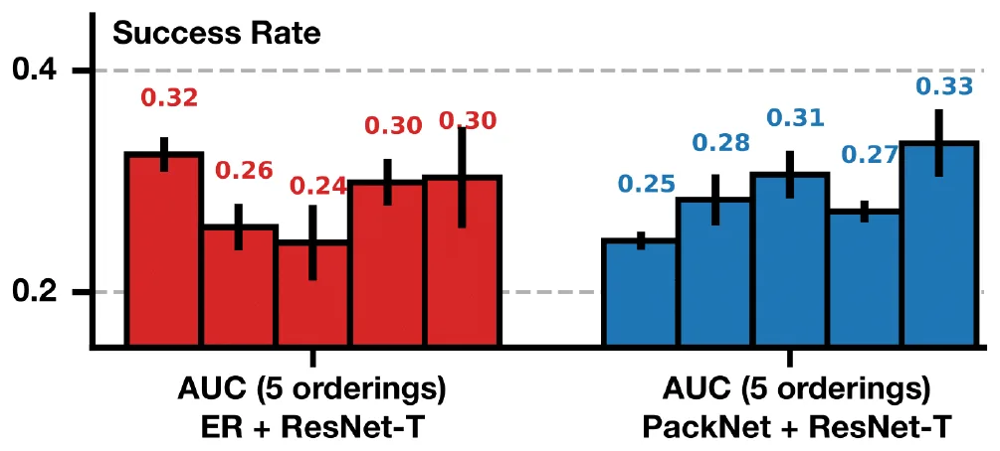
论文的发现：不同任务顺序确实会让同一算法的表现差别很大，其中 PackNet 的差别统计显著。
benchmark/__init__.py:83 定义了 21 种顺序（task_orders，第 0 种是自然顺序），用 data.task_order_index 选。论文没说用的是哪五种；第一根和默认顺序的数字吻合，其余四种我推测是索引 1 到 4，未核实。在 LIBERO-Long 上比较五种算法与架构组合在“先在 LIBERO-90 上预训练”和“从头学”两种条件下的表现。预训练是在 90 个任务上用三种架构各做 50 个 epoch 的行为克隆，每 5 个 epoch 存一次检查点，每种架构挑表现最好的检查点作为下游 LLDM 的初始模型。
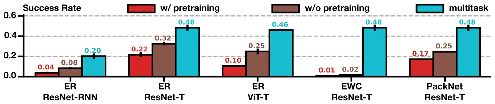
论文的发现：基本的监督预训练会损害下游终身学习表现。结合表 2（顺序微调的前向迁移反而比终身学习算法好），说明需要更好的预训练方法。
“无预训练”五根（0.08、0.32、0.25、0.02、0.25）正是表 8 里 LIBERO-Long 对应组合的 AUC；“多任务”三种架构（0.20、0.48、0.46）正是表 8 的 MTL。所以红、棕两色是 AUC，青色是 MTL 成功率，纵轴标的 “Success Rate” 不准确。预训练带来的下降：ER + ResNet-RNN −0.04（−50%）、ER + ResNet-T −0.10（−31%）、ER + ViT-T −0.15（−60%）、EWC + ResNet-T −0.01、PackNet + ResNet-T −0.08（−32%）。五个组合方向一致。论文没给预训练条件下的标准误。
代码：预训练对应 lifelong=multitask benchmark_name=LIBERO_90，multitask.py 在 cfg.pretrain 时第 0 个 epoch 也训练；下游用 pretrain_model_path 载入（main.py:160）。LIBERO_90 只允许默认任务顺序（benchmark/__init__.py:199）。另外，多任务训练默认 eval_in_train: false，训练中不做仿真评估；“挑最好的检查点”需要事后用 evaluate.py 对每个存下的检查点评估。
注意力可视化。为了看智能体在终身学习中忘掉了什么，作者把策略对每张输入图像的注意力画了出来，见附录 E.4。
终身学习基准。早期工作把标准视觉、语言数据集改成终身学习设定：图像分类的 MNIST、CIFAR、ImageNet，CORe50（论文；原文把它归为分割数据集），自然语言理解的 GLUE 和 SuperGLUE。强化学习里用电子游戏：Atari、XLand、ViZDoom。但监督学习不涉及程序性知识，游戏又不代表人类活动。Continual World（论文）把 Meta-World 的 50 个操作任务改成终身学习；CORA（论文）基于 Atari、Procgen、MiniHack 和 ALFRED 做了四个终身强化学习基准；F-SIOL-310 和 OpenLORIS-Object 是机器人视觉系统拍的真实终身物体学习数据集。也有工作分析终身学习智能体的各组成部分，但不针对机器人操作。
机器人学习基准。元学习的 Meta-World（论文），因果学习的 CausalWorld（论文），多任务的 RLBench（论文）和 BEHAVIOR-1K，泛化到新物体的 ManiSkill 和 ManiSkill2（论文），组合学习的 CompoSuite（论文）。和它们相比，LIBERO 的套件专为 LLDM 的研究主题设计：任务多、来自日常人类活动、物体和交互丰富；任务是程序化生成的，可以扩展；附带高质量人工演示，支持高效学习。
§6 写 “natural language understanding datasets like GLUE [67] and SuperGLUE [59]”，但参考文献 [59] 是 Sarlin 等的 “SuperGlue: Learning feature matching with graph neural networks”（CVPR 2020），那是图像特征匹配方法。自然语言基准 SuperGLUE 是 Wang 等 2019 年的另一篇论文。只是同名引错，不影响结论。
LIBERO 是机器人操作领域支持 LLDM 研究的新基准，包含能在仿真里造无限多操作任务的程序化生成流水线；作者用它造了 130 个标准化任务，并对策略和算法设计做了一组全面的实验。结果指向三个方向：怎样设计更好的网络来处理空间或时间信息；怎样设计算法提高前向迁移；怎样用预训练改善终身学习。
作者认为短期内看不到 LIBERO 带来的负面社会影响；但终身学习者主要从人那里学，长期看要研究 LLDM 里怎样保护用户隐私。
第 16 页是 NeurIPS 的论文清单，作者对“是否给了代码数据”“是否给了误差线”“是否报告了算力”都答 Yes；“资产的许可”答 N/A（代码仓库 README 实际写了 MIT 和 CC BY 4.0）。
表 4 列出实现的内容：三种架构（ResNet-RNN、ResNet-T、ViT-T）和五种算法（SeqL、EWC、ER、PackNet、MTL）。代码里还有一个论文没用到的 A-GEM（algos/agem.py、configs/lifelong/agem.yaml）和一个每任务重新初始化的 SingleTask。
三种架构的结构见图 6，图像编码器见图 7，超参数见表 5、6、7。
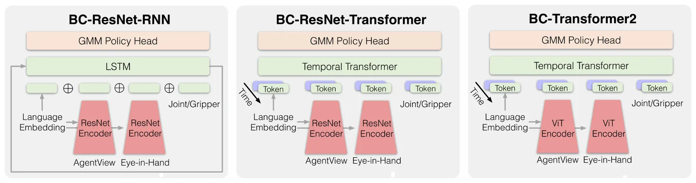
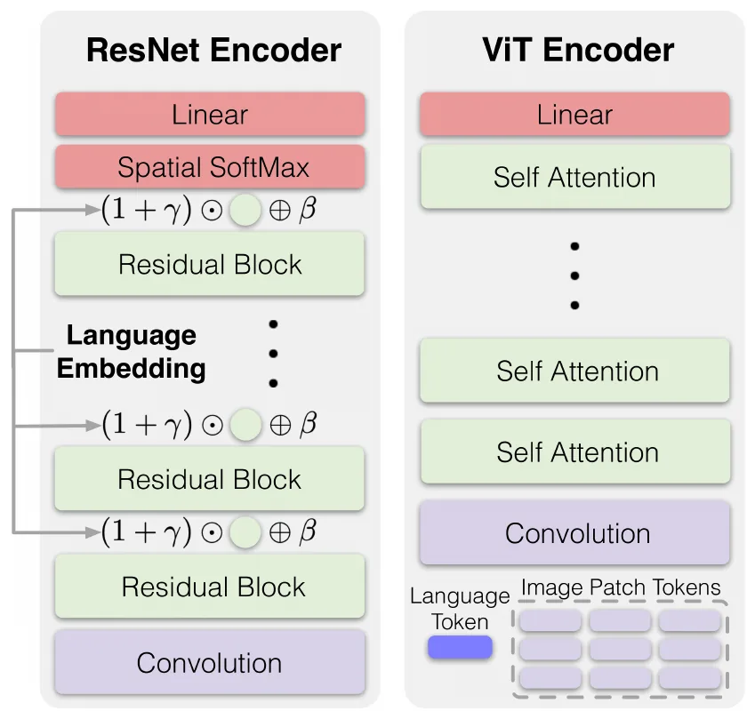
| 表 | 变量 | 论文 | 代码（configs/policy/*.yaml） |
|---|---|---|---|
| 表 5 · ResNet-RNN | |||
| 5 | resnet_image_embed_size | 64 | image_embed_size: 64 |
| 5 | text_embed_size | 32 | 32 |
| 5 | rnn_hidden_size | 1024 | 1024 |
| 5 | rnn_layer_num | 2 | rnn_num_layers: 2 |
| 5 | rnn_dropout | 0.0 | 0.0 |
| 表 6 · ResNet-T | |||
| 6 | extra_info_hidden_size | 128 | extra_hidden_size: 128（extra_num_layers: 0，所以实际不用这个隐藏层，关节和夹爪各一个线性层直接映射到 64 维） |
| 6 | img_embed_size | 64 | embed_size: 64 |
| 6 | transformer_num_layers / heads / head_output / mlp_hidden | 4 / 6 / 64 / 256 | 相同 |
| 6 | transformer_dropout / max_seq_len | 0.1 / 10 | 相同 |
| 表 7 · ViT-T | |||
| 7 | extra_info_hidden_size / img_embed_size | 128 / 128 | 相同 |
| 7 | spatial_transformer layers / heads / head_output / mlp / dropout | 7 / 8 / 120 / 256 / 0.1 | 相同 |
| 7 | spatial_down_sample_embed_size | 64 | 64 |
| 7 | temporal_transformer input / layers / heads / head_output / mlp / dropout / max_seq_len | null / 4 / 6 / 64 / 256 / 0.1 / 10 | 相同（键名不带 temporal_ 前缀） |
| 三者共用，论文表里没有 | |||
| – | GMM 头 | “GMM based output head” | 5 个分量，隐藏 1024，2 层，min_std 1e-4，softplus |
| – | 语言 MLP | – | 768 → 128（RNN 是 32）单层 |
| – | ViT patch | – | 8 × 8，前接 7 × 7 步长 2 卷积 |
所有实验用单张 NVIDIA A100 或单张 A40（CUDA 11.7），训练和评估配 8 到 16 个 CPU（原文写作 “8 16 CPUs”，应是排版丢了连接符）。论文没有给总 GPU 小时。
按附录 D 的设置和代码：一次 10 个任务的终身学习，训练中每个任务评估 11 次 × 20 个回合 = 220 个回合，10 个任务 2,200 个；学完第 \(k\) 个任务再测所有已学任务各 20 次，\(20\times(1+2+\dots+10)=1{,}100\) 个。合计 3,300 个回合。PackNet 剪枝后还要微调 50 个 epoch、每 5 个 epoch 评估一次（packnet.py:193 循环 0 到 50，共 11 次），再多 2,200 个，合计 5,500。MTL 默认训练中不评估，最后测 10 × 20 = 200 个。
每个“架构 × 套件 × 种子”组合：3,300 × 3（SeqL、ER、EWC）+ 5,500 + 200 = 15,600 个回合；× 12（3 架构 × 4 套件）× 3 种子 = 561,600 个回合，每个最多 600 步，上限约 3.4 亿个仿真步。代码默认 20 个进程并行评估（eval/default.yaml 的 num_procs: 20）。不含任务顺序、语言嵌入和预训练这三组额外实验。
终身学习研究智能体怎样在无限的任务序列上持续获取和保留知识而不发生灾难性遗忘。主流有三类：动态结构（逐步扩展模型容纳新知识）、正则化（学新任务时把学习者约束在之前的检查点附近）、回放（存旧任务的样本，和新数据一起训练）。也有组合方法和新策略，但本基准只深入分析这三个基本方向在机器人任务上的利弊。
ER（经验回放）。学完一个任务后，把一部分数据存进记忆。学新任务时从记忆里采样，和当前任务数据合在一起，使训练数据近似所有任务的经验分布。实现里每学完一个任务存最多 1000 条轨迹；每次迭代除了新任务的一个 batch，再从记忆均匀采样固定数量（32 条轨迹）的回放数据。
EWC（弹性权重固化）。在单任务学习目标上加正则项，用 Fisher 信息矩阵衡量每个参数的重要性。任务 \(k\) 的损失：
\(\lambda\) 是惩罚系数，\(F_i\) 是 Fisher 信息矩阵的对角：\(F_k=\mathbb E_{s\sim D_k}\mathbb E_{a\sim p_\theta(\cdot|s)}\big(\nabla_{\theta_k}\log p_{\theta_k}(a|s)\big)^2\)。实际用的是在线版本：沿终身学习过程用指数滑动平均更新 Fisher，并用经验 Fisher（动作取自数据）稳定估计：\(\tilde F_k=\gamma F_{k-1}+(1-\gamma)F_k\)，\(F_k=\mathbb E_{(s,a)\sim D_k}\big(\nabla_{\theta_k}\log p_{\theta_k}(a|s)\big)^2\)。取 \(\gamma=0.9\)，\(\lambda=5\cdot10^4\)。
PackNet。动态结构方法，目标是阻止对旧任务重要的参数被改动：反复地训练、剪枝、微调、冻结网络的一部分。理论上完全避免遗忘，但每个新任务可用的参数越来越少。剪枝分两段：先训练，训练结束时按固定比例选出最重要的参数（实现里是 25%），其余剪掉；再微调选中的部分并冻结。按原论文的做法，不训练所有偏置和归一化层。微调的 epoch 数和训练相同（50）。所有评价指标都在微调之前计算。
er.py:53 对每个已学任务建 TruncatedSequenceDataset(dataset, n_memories)，n_memories = 1000（configs/lifelong/er.yaml）。这个类（datasets.py:130-139）的长度固定为 1000，__getitem__(idx) 直接取原数据集的第 idx 个样本，而原数据集是 robomimic 的 SequenceDataset，每个样本是一个长度为 10 的片段，大致每个时间步一个，按演示顺序排列。所以每个任务的记忆是前 1000 个片段，也就是前面几条演示（按 OpenVLA 版平均每条 161.5 帧估约 6 条；原始数据含停顿帧更长，条数更少；这是我的估计，未核实），不是随机挑的 1000 条轨迹，也不是 50 条演示的全部。每个任务各存 1000 个，学到第 10 个任务时记忆共 9,000 个片段。
回放量：每步从记忆里取 batch_size = 32 个片段，和当前任务的 32 个拼成 64 个（er.py:74 merge_datas）。论文的“32 条轨迹”实为 32 个片段。
ewc.py：第 68–69 行是 fish *= gamma; fish += fish_k，即 \(\tilde F_k=\gamma\tilde F_{k-1}+F_k\)，没有 \((1-\gamma)\)；第 39、79 行的惩罚是 \(\lambda\sum_iF_i(\theta_i-\theta^*_i)^2\)，没有 \(\tfrac12\)。按代码，学过 \(k\) 个任务后 Fisher 的总权重是 \(\sum_{j
另一个细节：第 61 行的 fish += grads**2 是先对一个 batch 的平均负对数似然求梯度、再平方，是 batch 级的平方梯度，不是论文写的逐样本 \((\nabla\log p)^2\) 的期望；最后除以 batch 数。这样估出来的 Fisher 一般偏小。
packnet.py:42 只在“属于当前任务”的权重里按绝对值排序，剪掉 prune_perc = 0.75；剪掉的权重在下一个任务开始时重新分给新任务（第 120 行）。所以第 \(k\) 个任务能留下的份额是 \(0.25\times0.75^{k-1}\)：25%、18.75%、14.1%、10.5%、7.9%、5.9%、4.4%、3.3%、2.5%、1.9%，10 个任务后还剩 \(0.75^{10}=5.6\%\) 没用。这和论文“每个任务可用参数越来越少”一致，并给出具体数字：LIBERO-Long 最后几个长任务只分到 2% 左右的卷积和线性权重（偏置和归一化层冻结、共享）。评估时把属于更晚任务的权重置零（第 284 行）。
“所有指标在微调之前计算”只对 FWT 成立。FWT 来自 learn_one_task 里的 11 次评估，确实在 end_task（剪枝 + 微调）之前；但成功率矩阵 \(c_{\tau,k}\)（NBT、AUC 用的）是在 end_task 之后测的（main.py:219-239），那时已经剪枝和微调过了。另外微调循环 range(0, 51) 实际训练 51 个 epoch。
图 8 到 11 展示四个套件的全部任务。图 8（Spatial）画的是初始状态，因为目标都一样；其余画的是目标状态。
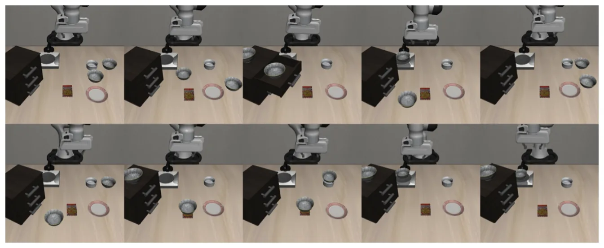
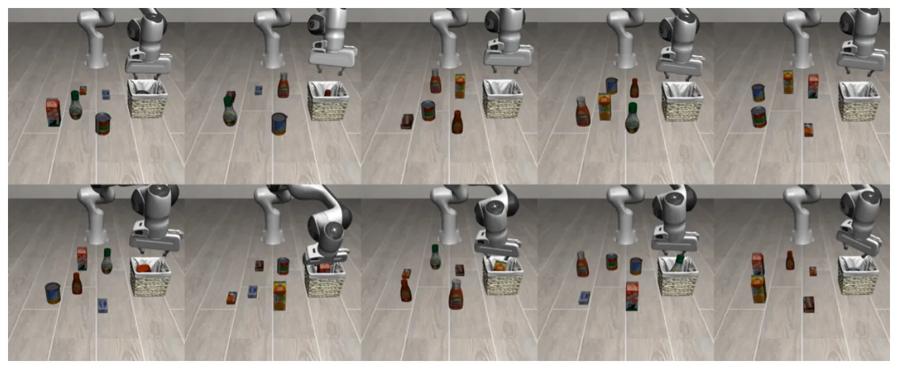
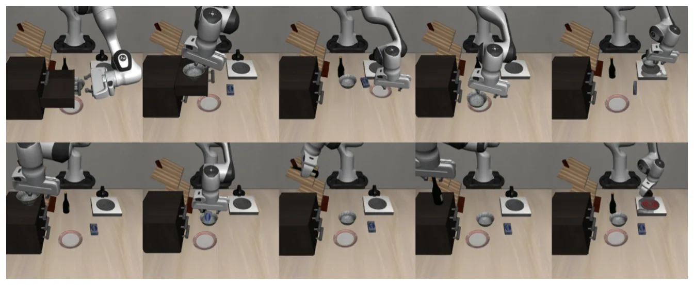
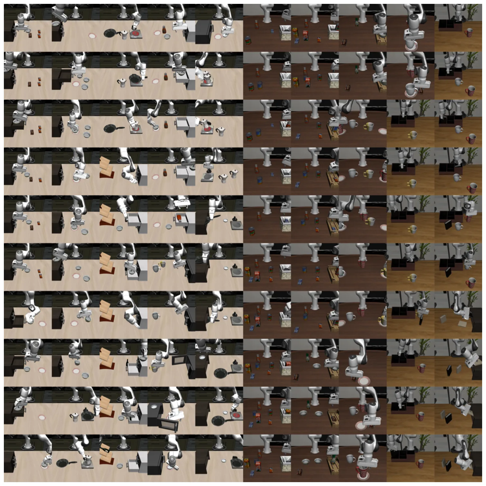
附录给出了图 2 例子（“打开柜子顶层抽屉，把碗放进去”）的完整描述文件。它分五块：:regions（每个物体的初始区域：目标表面、xy 范围、偏航角范围；还有柜子上的顶层、中层、底层区域）、:fixtures（桌子、柜子）、:objects（黑碗、盘子）、:obj_of_interest（柜子、黑碗）、:init（三个 On 谓词把物体放到各自区域）和 :goal。下面是代码仓库里一个 LIBERO-Long 任务的同格式文件，节选（MIT）：
(define (problem LIBERO_Kitchen_Tabletop_Manipulation)
(:domain robosuite)
(:language turn on the stove and put the moka pot on it)
(:regions
(moka_pot_init_region (:target kitchen_table)
(:ranges ((0.025 -0.025 0.075 0.025))) (:yaw_rotation ((0.0 0.0))))
(cook_region (:target flat_stove_1)) …)
(:fixtures kitchen_table - kitchen_table flat_stove_1 - flat_stove)
(:objects chefmate_8_frypan_1 - chefmate_8_frypan moka_pot_1 - moka_pot)
(:init (On flat_stove_1 kitchen_table_flat_stove_init_region) …)
(:goal (And (Turnon flat_stove_1) (On moka_pot_1 flat_stove_1_cook_region))))
出处：bddl_files/libero_10/KITCHEN_SCENE3_turn_on_the_stove_and_put_the_moka_pot_on_it.bddl，我压缩了缩进并省略了两个区域。:ranges 是 (x_min, y_min, x_max, y_max)，单位米，以目标表面为参照；这里摩卡壶的初始位置只在 5 cm × 5 cm 的小方块里随机。
论文只说 \(\mu_0\) 是区域里的分布。代码为了让评测可重复，给每个任务存了一份固定的初始状态（benchmark/__init__.py:76 init_states_file=f"{task}.pruned_init"）。我用 pickletools 静态读了 130 个 .pruned_init 里数组的形状（没有反序列化）：全部是 50 行，每行是一个展平的 MuJoCo 状态（Goal 79 维、Spatial 92 维、Object 110 维，LIBERO-100 随场景 47 到 123 维）。旁边的未剪枝 .init 文件 Spatial、Long、LIBERO-90 各 100 行，Object 50 行，Goal 没有。
评测（metric.py:111）第 \(i\) 个回合用第 \(i \bmod 50\) 个状态。原论文每个任务 20 个回合，所以只用到前 20 个；VLA 论文每任务 50 个回合，正好用完 50 个。设置状态后先执行 5 步全零动作让物理稳定（metric.py:119-122；README 的示例写的是 10 步），然后最多 600 步。
结论先说：每个任务 50 个 epoch、50 条演示；每 5 个 epoch 用 20 个最长 600 步的回合评估；Adam，batch 32，每个任务的学习率按余弦从 1e-4 降到 1e-5；按 robomimic 的惯例取成功率最高的检查点；学完后在所有已学任务上各测 20 个回合；所有网络约 13.5 G FLOPs；每个组合 3 个种子 {100, 200, 300}，共 180 组实验。
五种算法：SeqL（直接按顺序学，不做任何处理）、MTL（同时学序列里所有任务）、EWC、ER、PackNet；SeqL 和 MTL 可看作任何终身学习算法的下界和上界的近似。三种架构的区别在于空间或时间信息怎样聚合。
| 项 | 论文附录 D | 代码 8f1084e | 一致 |
|---|---|---|---|
| 每任务训练 | 50 epoch，50 条演示 | train/default.yaml n_epochs: 50；50 条全部用于训练（train_dataset_ratio: 0.8 定义了但没有被引用） | 是 |
| 评估频率和规模 | 每 5 epoch，20 个回合，最长 600 步 | eval/default.yaml eval_every: 5、n_eval: 20、max_steps: 600；先空跑 5 步 | 是 |
| 优化器 | Adam | torch.optim.AdamW，lr 1e-4，betas (0.9, 0.999)，weight_decay 1e-4 | AdamW，非 Adam |
| 学习率 | 每个任务余弦 1e-4 → 1e-5 | CosineAnnealingLR，T_max = n_epochs，eta_min: 1e-5；每个任务重建优化器和调度器（base.py:88-99） | 是 |
| batch | 32 | 32；ER 再加 32 个回放片段 | 是 |
| 梯度裁剪 | – | grad_clip: 100 | 论文未写 |
| 检查点 | 成功率最高 | 最早达到最高成功率的那个 | 是 |
| FLOPs | 约 13.5 G（原文写 FLOPS，每秒浮点运算，用词不对） | utils.py:103：thop 的 MACs × 2，输入是 batch 1、一个 10 步片段 | 未运行，未核实数值 |
| 种子 | {100, 200, 300} | config.yaml 默认 seed: 10000，需命令行覆盖 | 默认值不同 |
| 观测 | 图像 + 关节 + 夹爪 | agentview_image、robot0_eye_in_hand_image（128 × 128），robot0_joint_pos（7）、robot0_gripper_qpos（2）；不用末端位姿（use_ee: false） | 是 |
| 实验数 | 180 | 5 算法 × 3 架构 × 4 套件 × 3 种子 = 180 | 算式对 |
表 8 是三种终身学习算法（加 SeqL、MTL）× 三种架构 × 四个套件的全部结果。图 12 到 14 固定架构比较算法，图 15 到 17 固定算法比较架构，展示每个任务的成功率在整个学习过程中怎样变化。
| 算法 | 架构 | LIBERO-Long | LIBERO-Spatial | LIBERO-Object | LIBERO-Goal | ||||||||
|---|---|---|---|---|---|---|---|---|---|---|---|---|---|
| FWT | NBT | AUC | FWT | NBT | AUC | FWT | NBT | AUC | FWT | NBT | AUC | ||
| SeqL | ResNet-RNN | 0.24 ± 0.02 | 0.28 ± 0.01 | 0.07 ± 0.01 | 0.50 ± 0.01 | 0.61 ± 0.01 | 0.14 ± 0.01 | 0.48 ± 0.03 | 0.53 ± 0.04 | 0.15 ± 0.01 | 0.61 ± 0.01 | 0.73 ± 0.01 | 0.16 ± 0.00 |
| ResNet-T | 0.54 ± 0.01 | 0.63 ± 0.01 | 0.15 ± 0.00 | 0.72 ± 0.01 | 0.81 ± 0.01 | 0.20 ± 0.01 | 0.78 ± 0.04 | 0.76 ± 0.04 | 0.26 ± 0.02 | 0.77 ± 0.01 | 0.82 ± 0.01 | 0.22 ± 0.00 | |
| ViT-T | 0.44 ± 0.04 | 0.50 ± 0.05 | 0.13 ± 0.01 | 0.63 ± 0.02 | 0.76 ± 0.01 | 0.16 ± 0.01 | 0.76 ± 0.03 | 0.73 ± 0.03 | 0.27 ± 0.02 | 0.75 ± 0.01 | 0.85 ± 0.01 | 0.20 ± 0.01 | |
| ER | ResNet-RNN | 0.16 ± 0.02 | 0.16 ± 0.02 | 0.08 ± 0.01 | 0.40 ± 0.02 | 0.29 ± 0.02 | 0.29 ± 0.01 | 0.30 ± 0.01 | 0.27 ± 0.05 | 0.17 ± 0.05 | 0.41 ± 0.00 | 0.35 ± 0.01 | 0.26 ± 0.01 |
| ResNet-T | 0.48 ± 0.02 | 0.32 ± 0.04 | 0.32 ± 0.01 | 0.65 ± 0.03 | 0.27 ± 0.03 | 0.56 ± 0.01 | 0.67 ± 0.07 | 0.43 ± 0.04 | 0.44 ± 0.06 | 0.64 ± 0.01 | 0.34 ± 0.02 | 0.49 ± 0.02 | |
| ViT-T | 0.38 ± 0.05 | 0.29 ± 0.06 | 0.25 ± 0.02 | 0.63 ± 0.01 | 0.29 ± 0.02 | 0.50 ± 0.02 | 0.70 ± 0.02 | 0.28 ± 0.01 | 0.57 ± 0.01 | 0.57 ± 0.00 | 0.40 ± 0.02 | 0.38 ± 0.01 | |
| EWC | ResNet-RNN | 0.02 ± 0.00 | 0.04 ± 0.01 | 0.00 ± 0.00 | 0.14 ± 0.02 | 0.23 ± 0.02 | 0.03 ± 0.00 | 0.17 ± 0.04 | 0.23 ± 0.04 | 0.06 ± 0.01 | 0.16 ± 0.01 | 0.22 ± 0.01 | 0.06 ± 0.01 |
| ResNet-T | 0.13 ± 0.02 | 0.22 ± 0.03 | 0.02 ± 0.00 | 0.23 ± 0.01 | 0.33 ± 0.01 | 0.06 ± 0.01 | 0.56 ± 0.03 | 0.69 ± 0.02 | 0.16 ± 0.02 | 0.32 ± 0.02 | 0.48 ± 0.03 | 0.06 ± 0.00 | |
| ViT-T | 0.05 ± 0.02 | 0.09 ± 0.03 | 0.01 ± 0.00 | 0.32 ± 0.03 | 0.48 ± 0.03 | 0.06 ± 0.01 | 0.57 ± 0.03 | 0.64 ± 0.03 | 0.23 ± 0.00 | 0.32 ± 0.04 | 0.45 ± 0.04 | 0.07 ± 0.01 | |
| PackNet | ResNet-RNN | 0.13 ± 0.00 | 0.21 ± 0.01 | 0.03 ± 0.00 | 0.27 ± 0.03 | 0.38 ± 0.03 | 0.06 ± 0.01 | 0.29 ± 0.02 | 0.35 ± 0.02 | 0.13 ± 0.01 | 0.32 ± 0.03 | 0.37 ± 0.04 | 0.11 ± 0.01 |
| ResNet-T | 0.22 ± 0.01 | 0.08 ± 0.01 | 0.25 ± 0.00 | 0.55 ± 0.01 | 0.07 ± 0.02 | 0.63 ± 0.00 | 0.60 ± 0.07 | 0.17 ± 0.05 | 0.60 ± 0.05 | 0.63 ± 0.02 | 0.06 ± 0.01 | 0.75 ± 0.01 | |
| ViT-T | 0.36 ± 0.01 | 0.14 ± 0.01 | 0.34 ± 0.01 | 0.57 ± 0.04 | 0.15 ± 0.00 | 0.59 ± 0.03 | 0.58 ± 0.03 | 0.18 ± 0.02 | 0.56 ± 0.04 | 0.69 ± 0.02 | 0.08 ± 0.01 | 0.76 ± 0.02 | |
| MTL | ResNet-RNN | 0.20 ± 0.01 | 0.61 ± 0.00 | 0.10 ± 0.03 | 0.59 ± 0.00 | ||||||||
| ResNet-T | 0.48 ± 0.01 | 0.83 ± 0.00 | 0.54 ± 0.02 | 0.80 ± 0.01 | |||||||||
| ViT-T | 0.46 ± 0.00 | 0.79 ± 0.01 | 0.78 ± 0.02 | 0.82 ± 0.01 | |||||||||
表 8（原文第 26 页）。原文用三种深浅的洋红标出每个套件 AUC 最高的三个组合（只在三种终身学习算法 × 三种架构的 9 个组合里比）。按数字排：Long 是 PackNet + ViT-T 0.34、ER + ResNet-T 0.32，第三名 PackNet + ResNet-T 和 ER + ViT-T 并列 0.25；Spatial 是 PackNet + ResNet-T 0.63、PackNet + ViT-T 0.59、ER + ResNet-T 0.56；Object 是 PackNet + ResNet-T 0.60、ER + ViT-T 0.57、PackNet + ViT-T 0.56；Goal 是 PackNet + ViT-T 0.76、PackNet + ResNet-T 0.75、ER + ResNet-T 0.49。
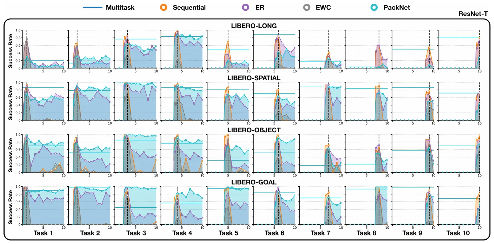
和图 13 同样的 4 × 10 网格。图 12 是 ResNet-RNN、图 14 是 ViT-T 下五种算法的比较；图 15、16、17 分别固定 EWC、ER、PackNet，用三种颜色比较 ResNet-RNN、ResNet-T、ViT-T。图注都说左上角那格是第一个任务在依次学 10 个任务过程中的表现。
行为克隆损失可能误导对成功率的判断。分类任务里损失低通常意味着准确率高，但决策任务里误差会在执行中累积直到失败。图 18 到 20（分别对应 ResNet-RNN、ResNet-T、ViT-T）画了 ER（紫）、EWC（灰）、PackNet（蓝）在四个套件上的训练损失（第一行）和成功率（第二行）。
每张图两行：上行是每个任务在终身学习过程中的损失曲线，下行是对应的成功率。EWC 的损失常常最低，成功率却最低；ER 的损失可能最高，成功率却好于 EWC。
论文的发现：EWC 有时损失最低但成功率不好；ER 损失可能最高但比 EWC 好。所以判断检查点好坏应该用成功率，不是行为克隆损失。正文这一段写 “Figure 18, 13 and 14”，应为 18、19、20（读者注 20）。
LIBERO-90 上三种架构多任务学习后在 90 个任务上各自的成功率（这就是 §5.2 预训练用的模型的表现）。
| 场景 | 指令 | ResNet-RNN | ResNet-T | ViT-T |
|---|---|---|---|---|
| KITCHEN SCENE10 | close the top drawer of the cabinet | 0.45 | 0.45 | 0.60 |
| KITCHEN SCENE10 | close the top drawer of the cabinet and put the black bowl on top of it | 0.10 | 0.10 | 0.00 |
| KITCHEN SCENE10 | put the black bowl in the top drawer of the cabinet | 0.00 | 0.25 | 0.05 |
| KITCHEN SCENE10 | put the butter at the back in the top drawer of the cabinet and close it | 0.15 | 0.00 | 0.00 |
| KITCHEN SCENE10 | put the butter at the front in the top drawer of the cabinet and close it | 0.20 | 0.00 | 0.00 |
| KITCHEN SCENE10 | put the chocolate pudding in the top drawer of the cabinet and close it | 0.25 | 0.00 | 0.00 |
| KITCHEN SCENE1 | open the bottom drawer of the cabinet | 0.05 | 0.00 | 0.15 |
| KITCHEN SCENE1 | open the top drawer of the cabinet | 0.30 | 0.45 | 0.25 |
| KITCHEN SCENE1 | open the top drawer of the cabinet and put the bowl in it | 0.05 | 0.00 | 0.00 |
| KITCHEN SCENE1 | put the black bowl on the plate | 0.35 | 0.30 | 0.00 |
| KITCHEN SCENE1 | put the black bowl on top of the cabinet | 0.20 | 0.70 | 0.15 |
| KITCHEN SCENE2 | open the top drawer of the cabinet | 0.45 | 0.40 | 0.65 |
| KITCHEN SCENE2 | put the black bowl at the back on the plate | 0.20 | 0.05 | 0.35 |
| KITCHEN SCENE2 | put the black bowl at the front on the plate | 0.10 | 0.35 | 0.00 |
| KITCHEN SCENE2 | put the middle black bowl on the plate | 0.35 | 0.10 | 0.00 |
| KITCHEN SCENE2 | put the middle black bowl on top of the cabinet | 0.50 | 0.10 | 0.60 |
| KITCHEN SCENE2 | stack the black bowl at the front on the black bowl in the middle | 0.25 | 0.05 | 0.25 |
| KITCHEN SCENE2 | stack the middle black bowl on the back black bowl | 0.05 | 0.05 | 0.00 |
| KITCHEN SCENE3 | put the frying pan on the stove | 0.40 | 0.30 | 0.35 |
| KITCHEN SCENE3 | put the moka pot on the stove | 0.15 | 0.00 | 0.40 |
| KITCHEN SCENE3 | turn on the stove | 0.60 | 0.70 | 1.00 |
| KITCHEN SCENE3 | turn on the stove and put the frying pan on it | 0.15 | 0.00 | 0.35 |
| KITCHEN SCENE4 | close the bottom drawer of the cabinet | 0.75 | 0.40 | 0.55 |
| KITCHEN SCENE4 | close the bottom drawer of the cabinet and open the top drawer | 0.20 | 0.00 | 0.05 |
| KITCHEN SCENE4 | put the black bowl in the bottom drawer of the cabinet | 0.25 | 0.30 | 0.25 |
| KITCHEN SCENE4 | put the black bowl on top of the cabinet | 0.80 | 0.60 | 0.85 |
| KITCHEN SCENE4 | put the wine bottle in the bottom drawer of the cabinet | 0.00 | 0.00 | 0.35 |
| KITCHEN SCENE4 | put the wine bottle on the wine rack | 0.05 | 0.00 | 0.20 |
| KITCHEN SCENE5 | close the top drawer of the cabinet | 0.05 | 0.80 | 0.90 |
| KITCHEN SCENE5 | put the black bowl in the top drawer of the cabinet | 0.20 | 0.10 | 0.15 |
| KITCHEN SCENE5 | put the black bowl on the plate | 0.05 | 0.05 | 0.10 |
| KITCHEN SCENE5 | put the black bowl on top of the cabinet | 0.50 | 0.25 | 0.20 |
| KITCHEN SCENE5 | put the ketchup in the top drawer of the cabinet | 0.00 | 0.00 | 0.05 |
| KITCHEN SCENE6 | close the microwave | 0.10 | 0.10 | 0.20 |
| KITCHEN SCENE6 | put the yellow and white mug to the front of the white mug | 0.20 | 0.05 | 0.10 |
| KITCHEN SCENE7 | open the microwave | 0.70 | 0.10 | 0.45 |
| KITCHEN SCENE7 | put the white bowl on the plate | 0.05 | 0.00 | 0.05 |
| KITCHEN SCENE7 | put the white bowl to the right of the plate | 0.05 | 0.05 | 0.15 |
| KITCHEN SCENE8 | put the right moka pot on the stove | 0.15 | 0.00 | 0.10 |
| KITCHEN SCENE8 | turn off the stove | 0.20 | 0.25 | 0.75 |
| KITCHEN SCENE9 | put the frying pan on the cabinet shelf | 0.45 | 0.15 | 0.05 |
| KITCHEN SCENE9 | put the frying pan on top of the cabinet | 0.25 | 0.40 | 0.30 |
| KITCHEN SCENE9 | put the frying pan under the cabinet shelf | 0.15 | 0.45 | 0.15 |
| KITCHEN SCENE9 | put the white bowl on top of the cabinet | 0.10 | 0.10 | 0.15 |
| KITCHEN SCENE9 | turn on the stove | 0.50 | 0.40 | 0.95 |
| KITCHEN SCENE9 | turn on the stove and put the frying pan on it | 0.00 | 0.00 | 0.00 |
| LIVING ROOM SCENE1 | pick up the alphabet soup and put it in the basket | 0.00 | 0.00 | 0.00 |
| LIVING ROOM SCENE1 | pick up the cream cheese box and put it in the basket | 0.00 | 0.00 | 0.00 |
| LIVING ROOM SCENE1 | pick up the ketchup and put it in the basket | 0.00 | 0.00 | 0.00 |
| LIVING ROOM SCENE1 | pick up the tomato sauce and put it in the basket | 0.00 | 0.00 | 0.00 |
| LIVING ROOM SCENE2 | pick up the alphabet soup and put it in the basket | 0.00 | 0.00 | 0.00 |
| LIVING ROOM SCENE2 | pick up the butter and put it in the basket | 0.00 | 0.00 | 0.00 |
| LIVING ROOM SCENE2 | pick up the milk and put it in the basket | 0.00 | 0.05 | 0.00 |
| LIVING ROOM SCENE2 | pick up the orange juice and put it in the basket | 0.00 | 0.00 | 0.00 |
| LIVING ROOM SCENE2 | pick up the tomato sauce and put it in the basket | 0.00 | 0.05 | 0.00 |
| LIVING ROOM SCENE3 | pick up the alphabet soup and put it in the tray | 0.00 | 0.05 | 0.00 |
| LIVING ROOM SCENE3 | pick up the butter and put it in the tray | 0.00 | 0.30 | 0.00 |
| LIVING ROOM SCENE3 | pick up the cream cheese and put it in the tray | 0.00 | 0.25 | 0.00 |
| LIVING ROOM SCENE3 | pick up the ketchup and put it in the tray | 0.00 | 0.00 | 0.00 |
| LIVING ROOM SCENE3 | pick up the tomato sauce and put it in the tray | 0.00 | 0.25 | 0.00 |
| LIVING ROOM SCENE4 | pick up the black bowl on the left and put it in the tray | 0.00 | 0.40 | 0.20 |
| LIVING ROOM SCENE4 | pick up the chocolate pudding and put it in the tray | 0.00 | 0.20 | 0.25 |
| LIVING ROOM SCENE4 | pick up the salad dressing and put it in the tray | 0.00 | 0.00 | 0.10 |
| LIVING ROOM SCENE4 | stack the left bowl on the right bowl and place them in the tray | 0.00 | 0.00 | 0.00 |
| LIVING ROOM SCENE4 | stack the right bowl on the left bowl and place them in the tray | 0.00 | 0.00 | 0.05 |
| LIVING ROOM SCENE5 | put the red mug on the left plate | 0.00 | 0.00 | 0.05 |
| LIVING ROOM SCENE5 | put the red mug on the right plate | 0.15 | 0.00 | 0.00 |
| LIVING ROOM SCENE5 | put the white mug on the left plate | 0.10 | 0.15 | 0.05 |
| LIVING ROOM SCENE5 | put the yellow and white mug on the right plate | 0.35 | 0.05 | 0.05 |
| LIVING ROOM SCENE6 | put the chocolate pudding to the left of the plate | 0.10 | 0.65 | 0.00 |
| LIVING ROOM SCENE6 | put the chocolate pudding to the right of the plate | 0.05 | 0.55 | 0.00 |
| LIVING ROOM SCENE6 | put the red mug on the plate | 0.00 | 0.20 | 0.00 |
| LIVING ROOM SCENE6 | put the white mug on the plate | 0.00 | 0.20 | 0.00 |
| STUDY SCENE1 | pick up the book and place it in the front compartment of the caddy | 0.00 | 0.00 | 0.05 |
| STUDY SCENE1 | pick up the book and place it in the left compartment of the caddy | 0.20 | 0.05 | 0.00 |
| STUDY SCENE1 | pick up the book and place it in the right compartment of the caddy | 0.00 | 0.10 | 0.00 |
| STUDY SCENE1 | pick up the yellow and white mug and place it to the right of the caddy | 0.00 | 0.30 | 0.35 |
| STUDY SCENE2 | pick up the book and place it in the back compartment of the caddy | 0.35 | 0.30 | 0.00 |
| STUDY SCENE2 | pick up the book and place it in the front compartment of the caddy | 0.25 | 0.10 | 0.00 |
| STUDY SCENE2 | pick up the book and place it in the left compartment of the caddy | 0.25 | 0.45 | 0.05 |
| STUDY SCENE2 | pick up the book and place it in the right compartment of the caddy | 0.00 | 0.20 | 0.00 |
| STUDY SCENE3 | pick up the book and place it in the front compartment of the caddy | 0.20 | 0.00 | 0.00 |
| STUDY SCENE3 | pick up the book and place it in the left compartment of the caddy | 0.40 | 0.45 | 0.15 |
| STUDY SCENE3 | pick up the book and place it in the right compartment of the caddy | 0.00 | 0.05 | 0.05 |
| STUDY SCENE3 | pick up the red mug and place it to the right of the caddy | 0.00 | 0.20 | 0.05 |
| STUDY SCENE3 | pick up the white mug and place it to the right of the caddy | 0.00 | 0.00 | 0.05 |
| STUDY SCENE4 | pick up the book in the middle and place it on the cabinet shelf | 0.05 | 0.20 | 0.05 |
| STUDY SCENE4 | pick up the book on the left and place it on top of the shelf | 0.20 | 0.10 | 0.15 |
| STUDY SCENE4 | pick up the book on the right and place it on the cabinet shelf | 0.00 | 0.25 | 0.05 |
| STUDY SCENE4 | pick up the book on the right and place it under the cabinet shelf | 0.15 | 0.10 | 0.05 |
| 90 个任务的平均（我算的） | 0.154 | 0.168 | 0.156 | |
原文第 34–35 页。最后一行的平均是我算的。所有数都是 0.05 的整数倍，和每任务 20 个回合一致。
90 个任务平均：ResNet-RNN 0.154、ResNet-T 0.168、ViT-T 0.156。成功率为 0 的任务分别有 34、30、36 个，三种架构都是 0 的有 10 个；达到 0.5 的只有 7、6、9 个。按场景分：厨房 46 个任务平均 0.240 / 0.193 / 0.265，客厅 27 个 0.028 / 0.124 / 0.028，书房 17 个 0.121 / 0.168 / 0.062。客厅的抓放进篮子、托盘任务几乎全军覆没（LIVING_ROOM_SCENE1、2 的 9 个任务三种架构全是 0 或 0.05）。
这解释了 §5.2 Q6 的一部分：用来初始化下游学习的“预训练模型”本身在 LIBERO-90 上只有 15% 到 17% 的成功率，“预训练有害”是在这样弱的预训练模型上得出的。这是我的解读，论文没这么说。
为了直观了解不同算法和架构在终身学习中的表现，作者可视化策略的注意力图，看机器人是否关注了每个任务里该关注的区域。方法是基于扰动的显著性（Greydanus 等）：对输入图像 \(I\) 在位置 \((i,j)\) 用高斯滤波局部模糊，得到 \(\Phi(I,i,j)\)；记 \(\pi_u(I)\) 为空间模块的输入（例如 ResNet 或 ViT 编码器最后的隐表示），显著性分数定义为原图和模糊图隐表示的欧氏距离：
\(S_\pi(i,j)\) 大，说明 \((i,j)\) 附近的信息对决策重要。为省计算，只对 \(i\bmod5\)、\(j\bmod5\) 的像素算分数。最后归一化：\(P(i,j)=S_\pi(i,j)/\sum_{i,j}S_\pi(i,j)\)。
代码里的 PerturbationAttention（bc_transformer_policy.py）用的是另一种扰动：把 16 × 16 的 patch 换成图像均值，再对输出差取 \(10^5\) 倍的 softmax。和式 (4) 的高斯模糊、每 5 个像素取一点不是同一个实现；论文的图可能是用别的脚本画的，未核实。
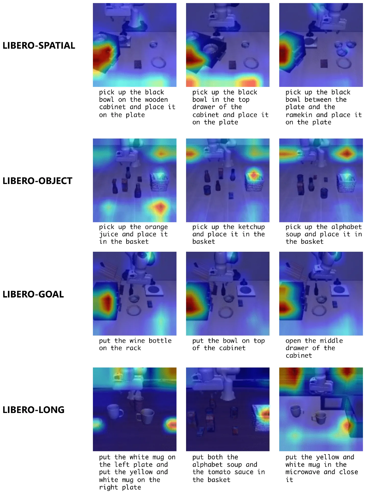
不同套件（图 21）。① 策略更关注机械臂和目标放置区，而不是目标物体；② 有时关注和任务无关的区域，比如桌面空白处。说明学到的策略使用感知信息的方式和人很不一样，容易把无关特征和动作虚假关联，这是策略对任务过拟合、跨任务泛化差的主要原因。
LIBERO-Long 第一个任务（把字母汤和番茄酱汁都放进篮子）的同一状态，在终身学习过程中注意力的变化。四行分别是 ER 或 PackNet 配 ResNet-T 或 ViT-T；每行从左到右是学完第 1、3、5、10 个任务后的策略。
同一任务随学习过程（图 22）。① ViT 编码器的注意力随时间更稳定，ResNet 的注意力图逐渐变散；② PackNet 因为给每个任务分了容量，注意力在整个过程中更一致。
LIBERO-Long 的任务 5（白杯放左盘、黄白杯放右盘）和任务 10（黄白杯放进微波炉并关门）。第一、三行是策略在刚学完的任务上的注意力，第二行是学完任务 10 后回头测任务 5（后向迁移）。图 23 固定 ResNet-T 比较 ER、EWC、PackNet；图 24 固定 ER 比较三种架构。
不同算法（图 23）。① PackNet 的注意力更集中，通常只有一个峰；② ER 和 EWC 的注意力图相似，但 EWC 表现差得多，所以注意力只能辅助分析，不能用来预测表现。
不同架构（图 24）。① ViT 的注意力比 ResNet 集中；② ResNet 遗忘时注意力平滑地变散，ViT 遗忘时注意力可能整块跳到别的位置；③ ResNet 配 LSTM 或时间 transformer 时，注意力似乎暗示“未来轨迹的走向”，ViT 没有这种现象。
图 25：ER + ResNet-T 在三种任务顺序下学 LIBERO-Long 的三个任务，每行一种顺序，每张图标出这个任务在序列里排第几。图 26：ResNet-T 配三种算法，在 LIBERO-Long 三个任务上有无预训练的注意力对比。
不同任务顺序（图 25）。① 同一任务排在序列不同位置，注意力不同；② 越靠后学的任务，注意力似乎越分散。
有无预训练（图 26）。① 有预训练时策略更容易关注无关区域；② 有些预训练策略的注意力比没预训练的更贴近任务相关特征，表现却更低。再次说明语义上合理的注意力图和表现之间没有正相关。
结论先说：环境层面（相机、频率、控制器、初始状态、成功判定）代码和论文完全一致，而且代码给出了论文没写的细节。超参数表 5 到 7 全部对得上。不一致的集中在算法实现（ER、EWC、PackNet）、优化器（AdamW）和 ResNet-T 的语言注入方式。指标公式里 FWT、AUC 一致，NBT 的边界处理和 \(c_{k,k}\) 取值不同。
| 部分 | 论文 | 代码 | 出处 |
|---|---|---|---|
| 仿真器 | 基于 robosuite | robosuite==1.4.0、bddl==1.0.1、robomimic==0.2.0；Python 3.8.13 | requirements.txt、README |
| 控制器 | “末端动作” | OSC_POSE：7 维，前 6 维输入范围 [−1, 1]，映射到每步最多 0.05 m、0.5 rad 的增量；kp 150，阻尼比 1；最后一维夹爪 −1 开、+1 合 | env_wrapper.py:17；robosuite v1.4.0 osc_pose.json |
| 频率和时域 | – | control_freq=20（每步 0.05 s）；环境内部 horizon=1000 | env_wrapper.py:27-28 |
| 相机 | – | agentview、robot0_eye_in_hand，默认 128 × 128 | env_wrapper.py:31-36 |
| 成功 | 所有谓词为真时结束 | done = _check_success()，全部 goal 谓词为真 | bddl_base_domain.py:807 |
| 初始状态 | \(\mu_0\) 区域内随机 | 每任务固定 50 个，第 i 回合用第 i mod 50 个；先空跑 5 步 | benchmark/__init__.py:76；metric.py:111-122 |
| 任务顺序 | 5 种 | 21 种（task_orders），LIBERO-90 只允许默认 | benchmark/__init__.py:83-105, 199 |
| FWT | 式 (3) | 一致（11 点、最早最好、之后填平） | algos/base.py:162-254 |
| NBT | 式 (3) | NBT\(_K=0\) 并除以 \(K\)；\(c_{k,k}\) 用重测值 | quick_guide_algo.ipynb compute_metric（读者注 6） |
| AUC | 式 (3) | 一致 | 同上 |
| ER | 1000 条轨迹，回放 32 条 | 每任务前 1000 个片段，回放 32 个片段 | er.py:53, 74；datasets.py:130（读者注 15） |
| EWC | \(\tfrac\lambda2\)，\(\gamma F+(1-\gamma)F_k\) | \(\lambda\)，\(\gamma F+F_k\)；batch 级平方梯度 | ewc.py:39, 61, 68-69, 79（读者注 16） |
| PackNet | 留 25%，指标在微调前 | 留剩余的 25%；FWT 在微调前，\(c_{\tau,k}\) 在微调后 | packnet.py:42, 120, 147-248（读者注 17） |
| 优化器 | Adam | AdamW，weight_decay 1e-4 | configs/train/optimizer/adam_w.yaml |
| ResNet-T 语言 | 单独 token | 单独 token + FiLM | bc_transformer_policy.py:266, 274 |
| RNN 推理 | – | 训练是 10 步片段从零状态开始；评测时隐状态带满整个回合 | bc_rnn_policy.py:195（读者注 21） |
| Ego4D 模板 | §4.1 第①步 | 仓库里没有 | 读者注 3 |
训练时每个样本是长度 10 的片段，LSTM 从全零隐状态开始（bc_rnn_policy.py forward(train_mode=True)）。评测时 get_action 每步只送一帧，隐状态 eval_h0, eval_c0 从回合开始一直累积（第 195 行），一个回合可达 600 步。模型在推理时看到的“历史长度”远超训练时的 10 步。这是 robomimic BC-RNN 的常见做法，但可能是 ResNet-RNN 表现差的原因之一。这是我的推断，论文没讨论。transformer 策略则在推理时只保留最近 10 步（latent_queue），和训练一致。
结论先说：VLA 论文只沿用了 LIBERO 的环境（仿真器、相机、动作接口、BDDL 任务和固定初始状态）和四个套件的名字；训练数据、训练方式、评测协议和指标都换了。所以 VLA 论文里的“LIBERO 成功率”和本文的 FWT/NBT/AUC 不能比，和本文的 MTL 成功率也不能直接比。环境、套件、OpenVLA 版数据（1,693 条 / 273,465 帧）以及 OpenVLA、OpenWAM、MolmoAct2 三家评测协议的对照，见 OpenWAM 页读者问答 问 1。
| 项 | 本文（2023） | VLA 论文的常见用法（OpenVLA 之后） |
|---|---|---|
| 问题设定 | 终身学习：10 个任务依次学，学新的时旧数据不可用（ER 除外） | 微调：一个套件或四个套件的数据一起训练，一次学完 |
| 套件 | Spatial、Object、Goal、Long 做终身学习；LIBERO-90 做预训练 | Spatial、Object、Goal、Long 四个；LIBERO-90 很少用 |
| 训练数据 | 原始 HDF5，每任务 50 条，128 × 128，含停顿 | OpenVLA 重生成版：256 × 256，删空动作帧，删重放失败的演示，Spatial / Object / Goal / Long 各 432 / 454 / 428 / 379 条 |
| 模型 | 约 13.5 GFLOPs 的小网络，从头训练，BERT 嵌入 | 数十亿参数的预训练 VLA，微调 |
| 评测回合 | 每任务 20 个，用 50 个固定初始状态里的前 20 个 | 每任务 50 个，50 个初始状态全部用到；每套件 500 个 |
| 开局空等 | 5 步全零动作（代码） | OpenVLA 10 步，OpenWAM 30 步，MolmoAct2 50 步 |
| 最长步数 | 统一 600 | 按套件设，OpenVLA 220 / 280 / 300 / 520 |
| 图像方向 | 训练和评测都用环境原样输出 | 数据和评测两边都旋转 180° |
| 指标 | FWT、NBT、AUC | 成功率 |
本文自己的数字可以作为一个参照：在四套件的 MTL（多任务，最接近 VLA 的“一起训练”）里，最好的 ViT-T 平均成功率 0.713（读者注 9），而 OpenVLA 之后的 VLA 普遍报到 0.9 以上。差距来自模型规模和预训练，也来自上面这些协议差别，不能直接归因。
用户手上的几个数我都对过了：附录 D 的 50 epoch、50 条演示、每 5 epoch 20 个回合、600 步、batch 32、余弦 1e-4 → 1e-5、约 13.5 G、3 个种子，robosuite 1.4.0 和 osc_pose.json 的 0.05 m / 0.5 rad，OpenVLA 版 432 / 454 / 428 / 379 条（按 dataset_info.json 的 shardLengths 求和），全部一致。和手上数字不一样的只有一处：论文写的 Adam，代码里是 AdamW（weight_decay 1e-4）。另有一处要补充 OpenWAM 页的协议表：原论文那一列“开局空等”写的是 “–”，代码里实际有 5 步全零动作。
| 要核对的 | 原论文 / 代码 8f1084e | 对 VLA 复现的影响 |
|---|---|---|
| 环境版本 | robosuite 1.4.0，LIBERO 8f1084e | OpenWAM 固定同一提交，另要求 mujoco 3.3.2 |
| 初始状态 | .pruned_init 每任务 50 个；第 i 回合用第 i mod 50 个 | 每任务 50 回合时，每个初始状态正好用一次；回合编号错位会换掉摆放 |
| 时域上限 | ControlEnv(horizon=1000)；robosuite 1.4.0 在 timestep ≥ horizon 后再 step 会抛 “executing action in terminated episode”（environments/base.py:376, 429） | 开局空等 + 最长步数之和必须 ≤ 1000。OpenWAM 30 + 700 = 730，OpenVLA 10 + 520 = 530，都在内；自己加长时要注意 |
| 成功判定 | 全部 goal 谓词同时为真；On 物体对物体要求水平距离 < 3 cm 且接触 | 评测脚本一般在 done 为真时立刻停止并计成功；不要等到最长步数再判定 |
| 相机分辨率 | 环境默认 128；原论文训练和评测都是 128 | VLA 评测时自己设 256 或更高，必须和训练数据一致 |
| 图像方向 | 原论文不旋转 | OpenVLA 版数据转 RLDS 时转了 180°，评测也要转 |
| 动作 | 7 维；GMM 均值过 tanh 在 [−1, 1]；夹爪 −1 开、+1 合 | OpenVLA 的数据管线把夹爪翻成 0 合 1 开，评测前要翻回 |
| 本体 | 原论文用关节角 7 维 + 夹爪 2 维，不用末端位姿 | VLA 多用末端位置、姿态和夹爪（OpenWAM 10 维、MolmoAct2 8 维） |
以下各条都是本页加的核算或对照，不属于论文内容。点编号跳到对应位置。
复现要点里和手上数字不一致的：只有优化器（论文 Adam，代码 AdamW + weight_decay 1e-4）。另外补充：原论文的评测代码开局有 5 步全零动作，OpenWAM 页协议表里这一格写的是 “–”。
论文没写、我也没核实的：任务顺序实验用的是 21 种顺序里的哪五种；13.5 GFLOPs 的具体算法；论文图里的注意力图是用哪段代码画的；每种设置的总 GPU 小时。
文中提到的数据集、基准和工具。链接在 2026 年 11 月 16 日用脚本检查过，除注明的以外都返回 200。
| 名称 | 是什么 | 主页 | 论文 |
|---|---|---|---|
| LIBERO | 本文 | 代码 · HF 数据 · 文档 | 2306.03310 |
| modified_libero_rlds | OpenVLA 重生成的 LIBERO 训练数据 | HF openvla/modified_libero_rlds | 2406.09246 |
| LIBERO-Plus | LIBERO 的扰动鲁棒性版本 | github.com/sylvestf/LIBERO-plus | 2510.13626 |
| robosuite | 底层仿真框架（v1.4.0） | robosuite.ai | 2009.12293 |
| robomimic | 数据集类和“选最好检查点”的惯例 | robomimic.github.io | 2108.03298 |
| BDDL | 任务描述语言（v1.0.1） | github.com/StanfordVL/bddl | – |
| Ego4D | 行为模板的来源 | ego4d-data.org | 2110.07058 |
| Continual World | Meta-World 上的终身 RL 基准 | sites.google.com/view/continualworld | 2105.10919 |
| Meta-World | 50 个操作任务，元学习 | meta-world.github.io | 1910.10897 |
| CORA | 终身 RL 基准平台 | github.com/AGI-Labs/continual_rl | 2110.10067 |
| RLBench | 多任务操作基准 | sites.google.com/view/rlbench | 1909.12271 |
| ManiSkill | 可泛化操作技能基准 | maniskill.ai | 2107.14483 · 2302.04659 |
| BEHAVIOR-1K | 1000 种日常活动的具身基准 | behavior.stanford.edu | CoRL 2023（Li 等） |
| CausalWorld | 因果结构与迁移 | sites.google.com/view/causal-world | 2010.04296 |
| CompoSuite | 组合式 RL 基准 | github.com/Lifelong-ML/CompoSuite | 2207.04136 |
| CORe50 | 连续物体识别 | vlomonaco.github.io/core50 | 1705.03550 |
| OpenLORIS-Object | 机器人视觉终身物体数据 | lifelong-robotic-vision.github.io | 1911.06487 |
| ALFRED | 指令跟随的具身任务 | askforalfred.com | 1912.01734 |
| Procgen | 程序化生成的 RL 游戏 | github.com/openai/procgen | 1912.01588 |
| MiniHack | 开放式 RL 沙盒 | github.com/facebookresearch/minihack | 2109.13202 |
| Atari（ALE） | 游戏 RL 环境 | github.com/Farama-Foundation/Arcade-Learning-Environment | 1312.5602 |
| ViZDoom | Doom 视觉 RL 平台 | github.com/Farama-Foundation/ViZDoom | CIG 2016 |
| CIFAR · MNIST · ImageNet | 图像分类（ImageNet 主页本机检查超时，未确认） | – | – |
| GLUE · SuperGLUE | 自然语言理解基准 | gluebenchmark.com | 1804.07461 · 1905.00537 |
| OpenVLA | LIBERO 评测脚本的常用参照 | github.com/openvla/openvla | 2406.09246 |